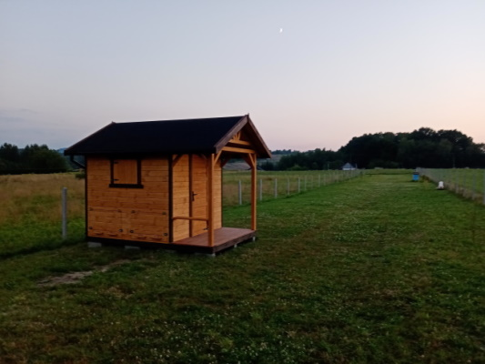
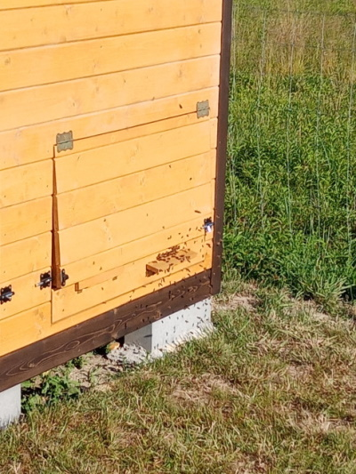
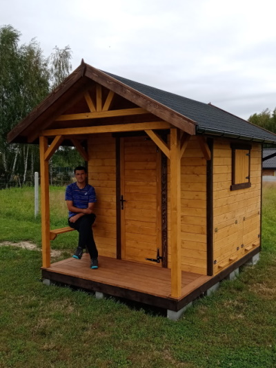

API - DOMEK
Apiterapia to leczenie produktami pszczelimi, czyli miodem, propolisem, pyłkiem pszczelim czy mleczkiem pszczelim zwanym eliksirem młodości.
Odmianą apiterapii jest uloterapia, czyli oddychanie czystym antyseptycznym powietrzem pochodzącym prosto z ula.
Serdecznie zapraszam na sesje inhalacyjne do mojego apidomku, w którym zamontowane są dwie leżanki umieszczone bezpośrednio nad ulami z rodzinami pszczelimi.

Przebywanie w takim domku jest bardzo bezpieczne, ponieważ od pszczół oddziela nas podwójna siatka a badania naukowe potwierdzają, że woń naturalnego miodu, propolisu, wosku, pyłku pszczelego ma dobroczynny wpływ na praktycznie wszystkie układy narządowe człowieka. Szybko zauważalnym efektem jest zdecydowana poprawa jakości snu.
NAJPOPULARNIEJSZE WSKAZANIA DO ZASTOSOWANIA ULOTERAPII
- BEZSENNOŚĆ
- SYNDROM CIĄGŁEGO ZMĘCZENIA
- CHOROBY UKŁADU MOCZOWEGO
- CHOROBY REUMATYCZNE
- CHOROBY SERCA
- CHOROBY UKŁADU ODDECHOWEGO
- CHRONICZNY BÓL GŁOWY
- STANY DEPRESJI I STRESU
- ALERGIE
- OSŁABIENIE UKŁADU ODPORNOŚCIOWEGO

Na sesje można zabrać w ramach własnego komfortu - choć nie jest to konieczne - własną poduszkę, kocyk, karimatę itp. Nie można wnosić żadnych sprzętów połączonych z internetem, a także jedzenia i picia. Standardowy czas przebywania w apidomku to 30min. lub 1h jednak można go sobie dostosować zgodnie własnymi potrzebami.
Koszt:
30 minut – 30 zł/osoba
1 godzina – 50 zł/osoba
Ważne!
W pozycji siedzącej na obu leżankach zmieści się 6, a nawet 8 osób. W sytuacji wejść grupowych płaci się zawsze tylko za 2 osoby!!!

Wszelkie informacje, oraz ustalanie terminów wizyt pod nr tel. +48 502 563 373.